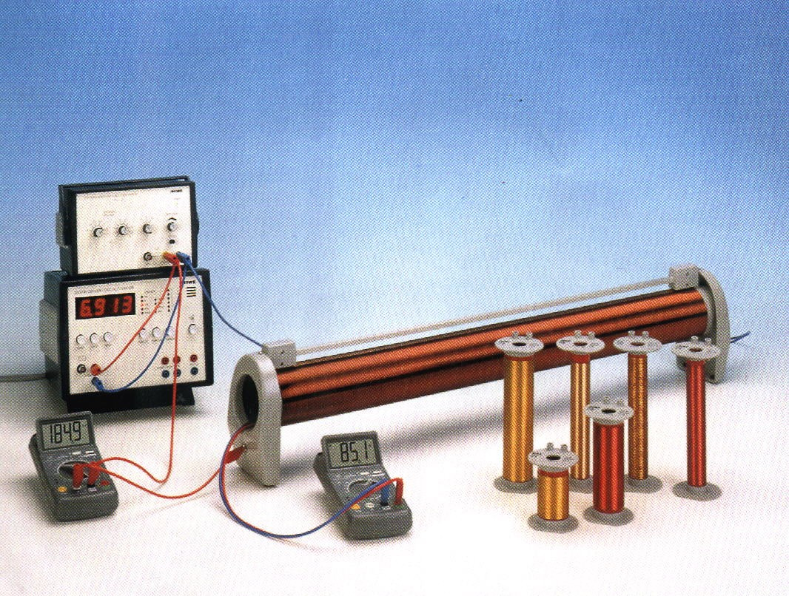

Inducción electromagnética II: Determinación de la permeabilidad del vacío a través de la frecuencia
Objetivo
Se determinará la permeabilidad del vacío mediante el estudio de la inducción electromagnética entre dos bobinas, en función de la frecuencia de la corriente alterna aplicada a la bobina primaria y de las características geométricas de ambas bobinas.
Fundamento teórico
Consideremos una bobina, que llamaremos bobina primaria, de densidad lineal de espiras n1, radio R1 y por la que circula una intensidad de corriente alterna I(t). El campo magnético B producido por esta bobina primaria en su interior es aproximadamente uniforme y su valor es el que tiene en su eje. Para verlo, se puede usar directamente la ley de Biot-Savart,
B(r)=4πμ0∫∣r−r0∣3dj×(r−r0)
(1)
donde µ0 = 4π·10−7 T · m· A−1 es la permeabilidad del vacío. Tomando el eje z como eje de la bobina, calculemos el campo producido en un punto r=zkdel eje. El resultado es:
que muestra que el campo magnético en el eje de la bobina es paralelo al propio eje. Si la bobina es larga, se puede aproximar el resultado por su valor en el centro de la bobina, dado por z = 0. Además, se puede despreciar el valor de R1 frente al valor de L. Se obtiene:
B=Lμ0IN1k=μ0In1k
(3)
Siendo este el valor que tomaremos como campo magnético en el interior de la bobina primaria y que expresaremos en función de la densidad de espiras n1=LN1.
Si dentro de la bobina primaria colocamos una bobina más pequeña, o bobina secundaria, de N2 vueltas y sección A2. El flujo Φ de campo magnéticoproducido por la bobina primaria a través de la bobina secundaria es igual a N2 veces el flujo a través de su sección A2, esto es,
Φ=N2∫A2B⋅da1=N2∫A2B⋅da1
(4)
donde da es un elemento diferencial de la sección de la bobina secundaria. Usando la expresión (3) para el campo magnético en el interior de la bobina, el flujo a través de la bobina secundaria queda:
Φ=N2∫A2Bda1=N2BA2=μ0In1N2A2
(5)
Si la intensidad de corriente I en la bobina varía con el tiempo, el flujo magnético a través de la bobina secundaria también varía con el tiempo. Ese flujo magnético variable a través de la bobina secundaria induce en ella una fuerza electromotriz, que viene dada por la ley de Faraday.
ε(t)=−dtdΦ(t)
(6)
Podremos medir esa fuerza electromotriz inducida midiendo la diferencia de potencial eléctrico V(t)=ε(t) entre los bornes de la bobina secundaria. Si, en la bobina primaria, circula una corriente alterna de amplitud I0 y frecuencia f de la forma
I(t)=I0cos(2πft)
(7)
Se puede deducir la diferencia de potencial que se inducirá entre los bornes de la bobina sustituyendo dicha corriente en la ecuación (5) y derivándola de acuerdo a la ecuación (6).
V(t)=μ0I0n1N2A2(2πf)sin(2πft)
(8)
Por tanto, si lo que se mide es el voltaje eficaz (Vef), su relación con la corriente inductora eficaz (Ief) será:
Vef=μ0n1N2A2(2πfIef)
(9)
Montaje experimental

Figura 1. Montaje experimental.
El montaje experimental se esquematiza en la figura 1. Se selecciona una bobina secundaria y se coloca en el interior de la bobina primaria, la cual alimentaremos con una corriente alterna, con el objetivo de medir la tensión inducida en la misma. La amplitud y frecuencia de la corriente aplicada a la bobina primaria se medirán mediante un polímetro y un frecuencímetro respectivamente. La diferencia de potencial inducida en la bobina secundaria se medirá con un voltímetro.
Resultados
Antes de realizar las medidas, se deben registrar los siguientes parámetros geométricos de la bobina primaria y de la bobina secundaria seleccionada. En el caso de la bobina primaria, se anotará su densidad lineal de espiras n1. Para la bobina secundaria, se registrarán su número de espiras N2, su diámetro D2 y su sección A2.
n1
N2
D2
A2
Manteniendo contante la corriente eficaz que alimentará la bobina primaria en Ief=20mA, se tomarán valores de la diferencia de potencial eléctrico Vefinducido en la bobina secundaria para valores de frecuencia desde 1 kHz a 5 kHz en pasos de 500 Hz. (Asegurarse al cambiar la frecuenciala intensidad sigue marcando 20 mA). De nuevo, cada medida irá acompañada de sus respectivas unidades e incertidumbre.
Ief
εIef
f
εf
Vef
εVef
Representar gráficamente la diferencia de potencial inducida en la bobina secundaria en función de la frecuencia de la corriente de la primaria y trazar sobre la representación anterior la recta de mínimos cuadrados Vef= af+ b.
Calcular el coeficiente de correlación r, la pendiente a y la ordenada en el origen b. Haciendo uso de estos datos y con ayuda de la ecuación (9) obtenga la permeabilidad del vacío μ0±εμ0.